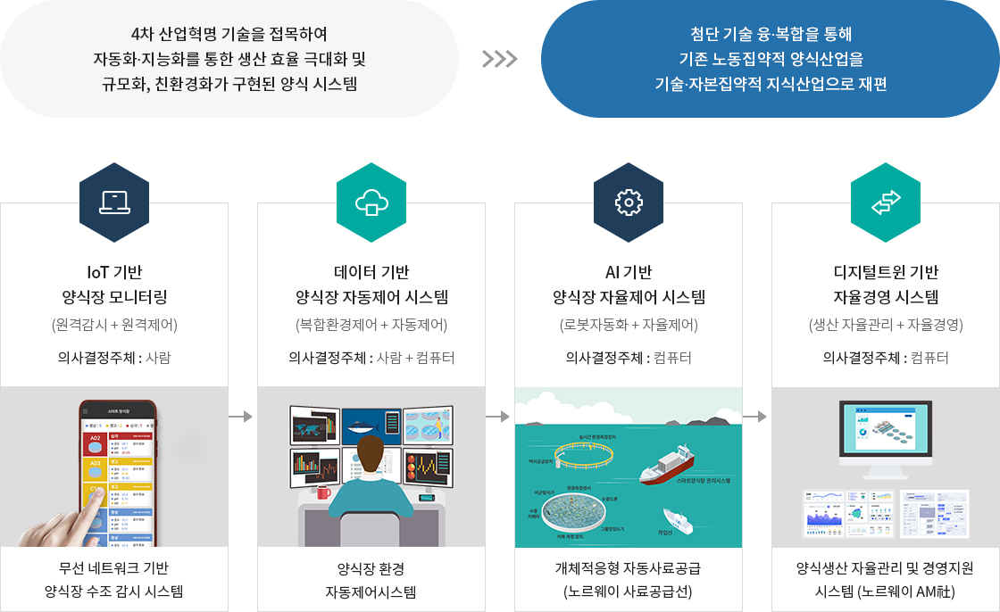
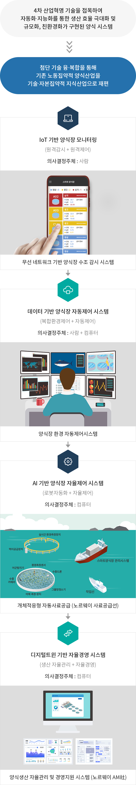

스마트 양식
- 홈
- 친환경스마트 양식
- 스마트 양식
스마트 양식


4차 산업혁명 기술을 접목하여 자동화∙지능화를 통한 생산 효율 극대화 및 규모화, 친환경화가 구현된 양식 시스템 에서 첨단 기술 융∙복합을 통해 기존 노동집약적 양식산업을 기술∙자본집약적 지식산업으로 재편
-
IoT 기반 양식장 모니터링
(원격감시 + 원격제어)
의사결정주체 : 사람
무선 네트워크 기반 양식장 수조 감시 시스템 -
데이터 기반 양식장 자동제어 시스템
(복합환경제어 + 자동제어)
의사결정주체 : 사람 + 컴퓨터
양식장 환경 자동제어시스템 -
AI 기반 양식장 자율제어 시스템
(로봇자동화 + 자율제어)
의사결정주체 : 컴퓨터
개체적응형 자동사료공급(노르웨이 사료공급선) -
디지털트윈 기반 자율경영 시스템
(생산 자율관리 + 자율경영)
의사결정주체 : 컴퓨터
양식생산 자율관리 및 경영지원시스템 (노르웨이 aM社)